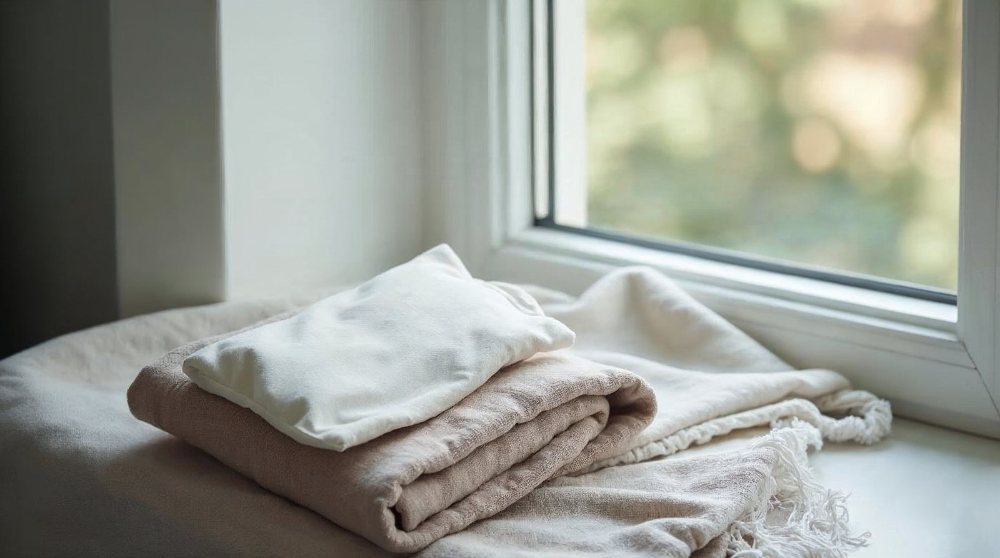
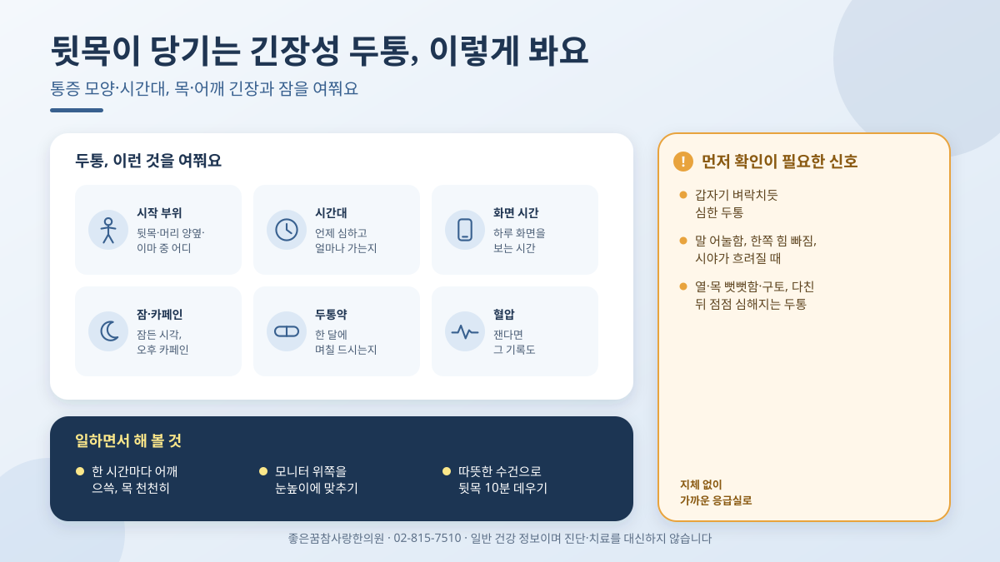

이종호 한의사 감수좋은꿈참사랑한의원 대표원장 (한의사 면허번호 19769)발행 2026-11-26 · 수정 2026-11-26
이 글의 차례
일요일 밤 열한 시, 내일 아침 회의 자료를 한 번 더 열어 보다가 어금니를 꽉 물고 있는 자신을 발견합니다. 머리 둘레는 한 치수 작은 모자를 눌러쓴 것처럼 조여 오고, 뒷목은 돌처럼 단단합니다. 생각해 보니 오후부터 내내 이랬습니다.
이렇게 머리 양쪽을 띠로 조이거나 위에서 누르는 듯하고, 오후로 갈수록 무거워지는 두통은 긴장성 두통에 가까운 경우가 많습니다. 저는 이런 두통을 볼 때 머리만 보지 않습니다. 잠과 눈, 턱, 마음의 긴장, 그리고 진통제를 먹은 날까지 차례로 여쭙지요.
진료실에서 이런 말씀을 자주 듣습니다. 머리가 아프다고 하면 다들 좀 쉬라고 하는데, 쉴 수 있었으면 벌써 쉬었을 거라고요. 검사에서는 이상이 없다는데 매일 아프니 엄살처럼 보일까 봐 말도 꺼내기 어려웠다는 분도 계십니다.
긴장성 두통은 하루를 멈춰 세울 만큼 세지 않은 날이 많습니다. 그래서 아픈 채로 일을 하고, 밥을 차리고, 아이 숙제까지 봐 주게 되지요. 그렇게 버텨 온 날들이 얼마나 길었는지, 저는 그 이야기부터 듣고 싶습니다.
왜 오후로 갈수록 머리가 조여 올까요
아침에는 괜찮다가 오후 서너 시쯤부터 조여 오고, 저녁이면 머리띠를 두른 것 같다는 말씀을 많이 하십니다. 긴장성 두통은 이렇게 하루가 지나며 쌓이는 경우가 많습니다. 하루 동안 몸이 버틴 흔적이 저녁 무렵 머리로 모이는 셈이지요.
흔히 긴장성 두통이라고 부르는 두통은 양쪽 머리가 조이거나 누르는 듯하고, 걷거나 계단을 올라도 크게 심해지지 않는 편으로 알려져 있습니다. 메스꺼움은 없거나 가볍고, 아파도 하던 일은 어떻게든 이어 갈 수 있는 경우가 많습니다.
손끝에 거문고 줄처럼 팽팽하게 닿는 맥을 한의학에서는 현맥이라 부르고, 긴장과 피로가 쌓인 상태를 살피는 단서로 봅니다. 저는 이 두통을 떠올릴 때 그 줄을 생각합니다. 아침에 느슨하던 줄이 하루 동안 조금씩 감겨 팽팽해지는 모습입니다.
화면을 노려볼 때 이마에 힘이 들어가고, 마음 쓰이는 전화를 받을 때 어깨가 귀 쪽으로 올라갑니다. 집중할수록 어금니가 맞물리고 숨은 얕아지지요. 하나하나는 작은 힘이지만, 하루 내내 쉬지 못한 근육은 저녁이면 머리를 조이는 느낌으로 드러나곤 합니다.
목 뒤 근육은 뒤통수를 지나 두피를 감싸는 근육과 이어져 있습니다. 관자놀이에는 음식을 씹을 때 쓰는 근육이 넓게 붙어 있고요. 그래서 저는 머리가 아프다는 분께도 목 뒤와 두피, 턱 주변을 차례로 손으로 짚어 봅니다.
한의학에서도 두통을 목과 어깨의 긴장, 잠, 소화, 피로와 이어서 봅니다. 몸은 따로따로 움직이지 않습니다. 잠을 못 자면 통증을 더 크게 느끼고, 긴장이 풀리지 않으면 소화도 무거워집니다.
한쪽 머리가 맥박 치듯 욱신거리고, 움직이면 더 아프고, 속이 메스껍거나 빛과 소리가 거슬린다면 편두통에 가까울 수 있습니다. 두 가지가 섞여 오는 분도 적지 않습니다.
편두통 쪽이 의심된다면 한쪽 머리가 욱신거리는 편두통은 생활에서 무엇을 기록하나요?에 적어 둔 기록법을 함께 보셔도 좋습니다.
잠·눈·턱·마음, 네 군데를 차례로 봅니다
조이는 두통으로 오신 분께 제가 꼭 여쭙는 곳이 네 군데 있습니다. 잠과 눈, 턱, 그리고 마음입니다. 어느 한 곳이 원인이라기보다, 여러 곳의 긴장이 겹친 날 두통이 찾아오는 경우가 많기 때문입니다.
잠: 두통과 서로 꼬리를 무는 사이
잠을 설친 다음 날 머리가 무겁고, 머리가 아파 또 잠을 설치는 일이 되풀이되곤 합니다. 저는 몇 시간 주무셨는지보다 몇 시에 잠들고 몇 번 깨셨는지가 더 궁금합니다. 오래 누워 있어도 자주 깨면 몸은 밤새 쉬지 못한 셈이니까요.
잠과 두통이 어떻게 얽히는지는 잠을 못 자면 두통이 올 때는 어떻게 살피나요?에 따로 정리해 두었습니다. 코를 심하게 골고 아침마다 머리가 무겁다면 수면 검사가 가능한 의료기관에서 확인해 보세요.
눈: 찡그린 채 보낸 시간
가까운 글씨를 오래 보거나 도수가 맞지 않는 안경을 쓰면, 초점을 맞추느라 눈 주변과 이마 근육이 쉬지 못합니다. 어두운 방에서 휴대폰을 보다 잠드는 습관도 눈을 지치게 하지요. 이마와 눈썹 위부터 무거워진다면 눈 쪽을 의심해 봅니다.
안경을 맞춘 지 오래되었다면 도수부터 확인해 보세요. 눈의 피로와 두통은 눈이 피로할 때 생기는 두통은 어떻게 살피나요?에서 더 자세히 보실 수 있습니다. 시야가 갑자기 흐려지거나 눈이 아프고 충혈된다면 안과 확인이 먼저입니다.
턱: 집중할수록 어금니에 힘이 들어갑니다
턱은 생각보다 자주 일합니다. 집중하거나 화가 날 때, 무거운 것을 들 때, 잠든 사이에도 어금니를 맞물고 있는 분이 많습니다. 윗니와 아랫니는 음식을 씹거나 삼킬 때 말고는 살짝 떨어져 있는 편이 편안합니다. 이 글을 읽는 지금, 어금니는 어떤가요?
아침에 턱이 뻐근하고 관자놀이가 무겁다면, 자는 동안 이를 갈거나 악무는지 가족에게 물어보세요. 입을 벌릴 때 소리가 나거나 걸리는 느낌이 있다면 치과에서 이와 턱관절 상태를 확인받아 보세요.
마음의 긴장: 몸이 먼저 버팁니다
걱정이 많은 시기에는 마음보다 몸이 먼저 버팁니다. 시험이나 마감을 앞둔 몇 주, 가족을 돌보느라 밤낮없이 긴장한 시기에 두통이 잦아졌다는 분이 많습니다. 어깨가 올라가고 숨이 얕아진 채로 몇 주를 지내면 머리도 그 긴장을 함께 떠안습니다.
주말에는 덜하다가 월요일 오후부터 다시 조여 온다면 평일의 긴장과 자세 쪽에 무게를 둡니다. 반대로 큰일을 마친 주말에 오히려 더 아프다면 늦잠과 거른 커피, 갑자기 풀린 긴장이 겹치지 않았는지 살펴봅니다.
마음이 지쳐 있다는 것을 탓할 일은 아닙니다. 그만큼 애쓰셨다는 뜻이니까요. 두통보다 마음이 더 무겁고 잠까지 무너진 날이 이어진다면, 머리 이야기와 함께 마음 이야기도 편하게 꺼내 주세요.
진통제는 '먹은 날'을 세어 봅니다
아픈 채로 하루를 해내려면 약에 기댈 수밖에 없는 날이 있습니다. 그 선택을 탓할 생각은 없습니다. 다만 먹는 날이 조금씩 늘고 있다면, 한 번쯤 달력을 펴고 세어 보셨으면 합니다.
진통제를 너무 자주 먹다 보면 약이 오히려 두통을 잦게 만드는 경우가 있다고 알려져 있습니다. 약물과용 두통이라고 부릅니다. 진통제를 먹는 날이 한 달에 열흘을 넘는다면 의사나 약사와 상의해 보세요.
세는 방법은 간단합니다. 알 수가 아니라 날을 셉니다. 한 알을 먹었든 세 알을 먹었든 약을 먹은 날이면 달력에 동그라미 하나를 칩니다. 한 달 뒤 동그라미를 세어 보면 기억보다 많아서 놀라는 분이 적지 않습니다.
약 이름도 함께 적어 주세요. 같은 두통약이라도 여러 성분이 섞인 약이 있고, 카페인이 들어 있는 약도 있습니다. 먹는 날이 많다고 혼자 갑자기 끊거나 줄이지는 않습니다. 적어 둔 달력을 들고 처방한 의사나 약사와 상의하시면 됩니다.
예를 들면 이런 경우입니다
실제 어느 분의 사연이 아니라, 진료실에서 자주 보는 모습을 바탕으로 그려 본 장면입니다.
예를 들어 큰 시험이나 발표를 앞둔 몇 주 동안 매일 오후 머리가 조여 오고, 밤에는 내일 일을 생각하느라 잠이 늦어지는 경우가 있습니다. 이럴 때는 두통보다 잠드는 시각과 하루 중 긴장이 가장 큰 때를 적어 보시라고 말씀드립니다.
예를 들어 아침마다 턱이 뻐근하고 관자놀이가 무거운데, 가족에게 밤에 이를 간다는 말을 들은 경우도 있습니다. 치과에서 이와 턱관절을 확인받으시도록 안내하고, 진료 때는 턱과 목 뒤, 두피를 차례로 짚어 봅니다.
예를 들어 오후마다 진통제로 버티다 보니 약 기운이 떨어지는 저녁에 다시 아파 또 먹게 되고, 어느새 한 달에 열흘을 넘긴 경우도 있습니다. 이때는 먹은 날과 약 이름을 정리해 의사나 약사와 상의하시도록 돕고, 그사이 두통이 시작되는 시각과 그 전에 하던 일을 살펴봅니다.
스스로 점검해 보세요
- 머리 양쪽이 띠를 두른 듯 조이거나 위에서 누르는 느낌이다
- 오전보다 오후, 저녁으로 갈수록 무거워진다
- 아파도 하던 일은 이어 갈 수 있고, 걸어도 크게 심해지지 않는다
- 뒤통수 아래와 목 뒤를 누르면 단단하고 뻐근하다
- 아침에 턱이 뻐근하거나, 이를 간다는 말을 들은 적이 있다
- 잠을 설친 다음 날이나 마음 쓰이는 일이 많은 주에 더 잦다
- 진통제를 먹는 날이 한 달에 열흘 가까이 되거나 그보다 많다
점수를 매기려는 목록은 아닙니다. 해당하는 줄에 표시해 오시면 그 줄부터 이야기를 시작하겠습니다.
먼저 이렇게 여쭙니다
처음부터 정확하게 설명하지 못하셔도 괜찮습니다. 아래 질문을 떠올려 보시면 진료실에서 이야기가 한결 쉽게 풀립니다.
- 조이는 느낌인가요, 욱신거리는 느낌인가요? 양쪽인가요, 한쪽인가요?
- 하루 중 몇 시쯤 시작해 몇 시간쯤 이어지나요?
- 아플 때 걷거나 계단을 오르면 더 심해지나요? 메스꺼움은 있나요?
- 요즘 몇 시에 잠들고 밤에 몇 번 깨시나요? 아침에 턱은 어떤가요?
- 진통제는 한 달에 며칠, 어떤 약을 드시나요?
통증이 어디서 시작해 어디로 번지는지는 손가락으로 짚어 주시면 됩니다. 뒤통수 아래에서 시작해 머리 양옆으로 퍼지는지, 이마가 먼저인지에 따라 살필 곳의 순서가 달라집니다.
일상에서 먼저 해 볼 수 있는 것
진맥 실습 시간에 들었던 말 가운데, 잘 모르겠으면 손을 한번 떼라는 말이 있습니다. 손을 다시 얹으면 제가 얼마나 세게 누르고 있었는지부터 알게 되지요. 몸의 긴장도 비슷해서, 잠깐 힘을 빼 보아야 그동안 얼마나 힘을 주고 있었는지 느껴집니다.
- 오후 세 시쯤 어깨, 어금니, 이마, 숨 네 곳을 차례로 살피고 힘을 툭 내려놓기
- 입술은 가볍게 다물고 윗니와 아랫니는 살짝 떼어 두기
- 뒤통수 아래 양쪽 오목한 자리(한의학에서 풍지라 부르는 곳 근처)를 손가락으로 지그시 누르고, 두피를 손끝으로 쥐었다 놓으며 1~2분 풀기
- 숨을 넷까지 들이쉬고 여섯까지 천천히 내쉬기를 다섯 번 되풀이하기
- 하루 20~30분 가볍게 걷고, 잠들기 한 시간 전에는 화면 끄기
목과 두피를 풀 때는 시원한 정도에서 멈추세요. 세게 누를수록 잘 풀린다고 여기기 쉽지만, 너무 센 자극은 다음 날 더 뻐근하게 만들기도 합니다. 아프거나 어지러우면 그날은 쉬시면 됩니다.
한꺼번에 다 하려고 하면 오래가기 어렵습니다. 저는 큰 목표를 잘 드리지 않는 편입니다. 오후 세 시의 긴장 점검 하나만 몸에 붙여 보시고, 익숙해지면 하나씩 더해 가세요. 못 지킨 날은 다음 날 다시 하면 됩니다.

한의원에서 함께 살필 수 있는 경우
- 병원 검사에서 큰 이상은 없다고 들었지만 조이는 두통이 이어지는 경우
- 목과 어깨, 턱이 늘 굳어 있고 두통이 함께 오는 경우
- 잠이 얕거나 마음 쓰이는 일이 많은 시기에 두통이 잦아지는 경우
- 진통제를 먹는 날이 늘어 걱정되는 경우(의사·약사 상담과 함께)
좋은꿈참사랑한의원에 처음 오시면 먼저 양손을 올려 달라고 말씀드립니다. 저는 처음 오신 분이든 다시 오신 분이든 모든 분께 맥부터 짚습니다. 받으신 검사 결과와 드시는 약이 있다면 가져와 주세요.
맥을 짚으며 두통이 언제부터, 어떤 모양으로, 하루 중 언제 오는지 듣고, 잠과 소화, 대변, 요즘 마음 쓰이는 일도 여쭙습니다. 필요하다고 판단될 때 혀도 봅니다.
이어서 목 뒤와 두피, 턱 주변을 손으로 짚어 굳은 곳을 찾고, 고개를 돌리고 숙이는 움직임과 입을 벌리는 모습을 봅니다. 필요하면 혈압도 잽니다. 뒷목이 당긴다고 늘 혈압 때문은 아니지만, 높게 나온다면 내과 진료가 먼저입니다.
이렇게 살핀 내용을 바탕으로 침, 약침, 추나, 한약 상담 가운데 지금 상태에 맞는 방법을 함께 정합니다. 강한 자극이 부담스러운 분께는 머리와 척추, 천골 주변을 부드러운 손길로 살피는 두개천골추나를 검토하기도 합니다.
치료를 마치면 "시원하세요? 괜찮으세요?" 하고 여쭙고, 치료 중에도 불편하시면 바로 말씀해 주세요. 두통이 점점 잦아지고 심해지는 등 신경과 같은 다른 의료기관 확인이 먼저라고 판단되면, 왜 그런지 말씀드리고 안내합니다. 다시 오시면 지난번 이후 두통이 있던 날과 진통제를 먹은 날부터 이어서 여쭙습니다.
이렇게 기록해 오시면 상담이 쉬워집니다
두통은 정작 진료실에 오는 날에는 괜찮은 경우가 많습니다. 그래서 기억보다 기록이 힘이 됩니다. 2~4주만 한 줄씩 적어 보세요.
- 두통이 시작된 시각과 끝난 시각, 아픈 자리와 모양(조임·누름·욱신), 세기(0~10)
- 전날 잠든 시각과 깬 횟수, 아침에 턱이 뻐근했는지
- 그날 화면 앞에 있던 시간과 눈의 피로
- 그날 마음의 긴장(낮음·보통·높음 가운데 하나)
- 진통제 이름과 먹은 시각, 알 수, 한두 시간 뒤 어떻게 달라졌는지
진통제를 먹은 날은 달력에 따로 동그라미를 쳐 두시면 한 달에 며칠인지 한눈에 보입니다. 빠진 날이 있어도 괜찮습니다. 기억나는 만큼만 적어 오시면 나머지는 제가 여쭙겠습니다.
조이는 머리를 안고도 하루를 끝까지 해내셨을 겁니다. 그 하루를 조금 덜 버티며 보내실 수 있도록, 어디서부터 힘을 뺄 수 있을지 함께 찾아보겠습니다. 다음에 오시면 지난 한 달 진통제를 먹은 날이 며칠이었는지부터 여쭙겠습니다.
이런 증상은 먼저 확인이 필요합니다
- 갑자기 시작된, 지금까지 겪어 본 적 없는 극심한 두통
- 말이 어눌해지거나 한쪽 팔다리에 힘이 빠지는 등 신경 증상이 함께 오는 경우
이런 신호가 있으면 한의원보다 가까운 병원이나 응급실을 먼저 찾으세요.

여쭙는 것
- 조이는 느낌인가요, 욱신거리는 느낌인가요? 양쪽인가요, 한쪽인가요?
- 하루 중 몇 시쯤 시작해 몇 시간쯤 이어지나요?
- 아플 때 걷거나 계단을 오르면 더 심해지나요? 메스꺼움은 있나요?
생활에서 해 볼 것
- 오후 세 시쯤 어깨, 어금니, 이마, 숨 네 곳을 차례로 살피고 힘을 툭 내려놓기
- 입술은 가볍게 다물고 윗니와 아랫니는 살짝 떼어 두기
- 뒤통수 아래 양쪽 오목한 자리(한의학에서 풍지라 부르는 곳 근처)를 손가락으로 지그…
한의원에서 함께 살필 것
- 병원 검사에서 큰 이상은 없다고 들었지만 조이는 두통이 이어지는 경우
- 목과 어깨, 턱이 늘 굳어 있고 두통이 함께 오는 경우
- 잠이 얕거나 마음 쓰이는 일이 많은 시기에 두통이 잦아지는 경우
먼저 확인이 필요한 신호
- 갑자기 시작된, 지금까지 겪어 본 적 없는 극심한 두통
- 말이 어눌해지거나 한쪽 팔다리에 힘이 빠지는 등 신경 증상이 함께 오는 경우
한눈에 보는 표
| 구분 | 핵심 |
|---|---|
| 여쭙는 것 | 조이는 느낌인가요, 욱신거리는 느낌인가요? 양쪽인가요, 한쪽인가요? 하루 중 몇 시쯤 시작해 몇 시간쯤 이어지나요? |
| 생활에서 해 볼 것 | 오후 세 시쯤 어깨, 어금니, 이마, 숨 네 곳을 차례로 살피고 힘을 툭 내려놓기 입술은 가볍게 다물고 윗니와 아랫니는 살짝 떼어 두기 |
| 한의원에서 함께 살필 것 | 병원 검사에서 큰 이상은 없다고 들었지만 조이는 두통이 이어지는 경우 목과 어깨, 턱이 늘 굳어 있고 두통이 함께 오는 경우 |
| 먼저 확인이 필요한 신호 | 갑자기 시작된, 지금까지 겪어 본 적 없는 극심한 두통 말이 어눌해지거나 한쪽 팔다리에 힘이 빠지는 등 신경 증상이 함께 오는 경우 |
자주 묻는 질문
긴장성 두통과 편두통은 어떻게 다른가요?
긴장성 두통은 양쪽이 조이거나 누르는 듯하고 움직여도 크게 심해지지 않는 경우가 많습니다. 편두통은 한쪽이 욱신거리고 움직이면 더 아프며, 메스꺼움이나 빛·소리 과민이 함께 오기도 합니다. 둘이 섞인 분도 있어 기록과 진찰로 나누어 봅니다.
진통제를 자주 먹는데 끊어야 할까요?
혼자 갑자기 끊거나 줄이지 마세요. 한 달에 열흘 넘게 드신다면 약물과용 두통일 가능성도 있어 의사나 약사와 먼저 상의하시길 권합니다. 먹은 날과 약 이름을 적어 가시면 상의가 쉬워집니다.
아침에 턱이 뻐근하고 관자놀이가 아픈데 관계가 있나요?
자는 동안 이를 갈거나 악무는 습관이 있으면 턱과 관자놀이가 함께 굳기도 합니다. 치과에서 이와 턱관절 상태를 확인해 보시고, 진료 때 턱 주변 근육도 짚어 봅니다.
추나 진료를 받아도 되나요?
목과 어깨, 머리 주변의 긴장이 관련되어 있다고 판단되면 진찰 뒤 적용 여부와 방법을 정합니다. 목 수술을 받으셨거나 골다공증이 있다면 먼저 알려 주세요.
좋은꿈참사랑한의원은 재진 때 지난번 이야기부터 이어서 여쭙니다. 진료시간과 예약은 오시는 길에서 확인하세요.
어디서 상담받을 수 있나요?
좋은꿈참사랑한의원은 서울 동작구 만양로2길 2 신성빌딩 3층·5층(서울 동작구 상도동, 7호선 상도역 3번 출구 근처)에 있습니다. 한의사 3명(이종호 대표원장, 조영기 수석진료원장, 정원영 진료원장)이 진료합니다. 진료시간은 평일 09:30~20:00(점심 13:00~14:00), 토·일·공휴일 09:30~15:00이며, 방문 전 전화로 확인을 권합니다. 예약은 네이버 예약, 카카오톡 상담, 전화 02-815-7510로 받습니다.
이 글은 일반적인 건강 정보이며 개인의 진단이나 치료를 대신하지 않습니다. 증상이 있거나 복용 중인 약이 있다면 진료를 통해 확인하세요. 치료 효과는 개인마다 다를 수 있습니다.
작성 기준: 일반적으로 알려져 있는 건강 정보를 참고해 정리했습니다(대표원장 감수). 증상 기록은 1~2주 동안 하루 1회, 비슷한 시간에 적어 오시면 지난 상태와 비교하기 쉽습니다.